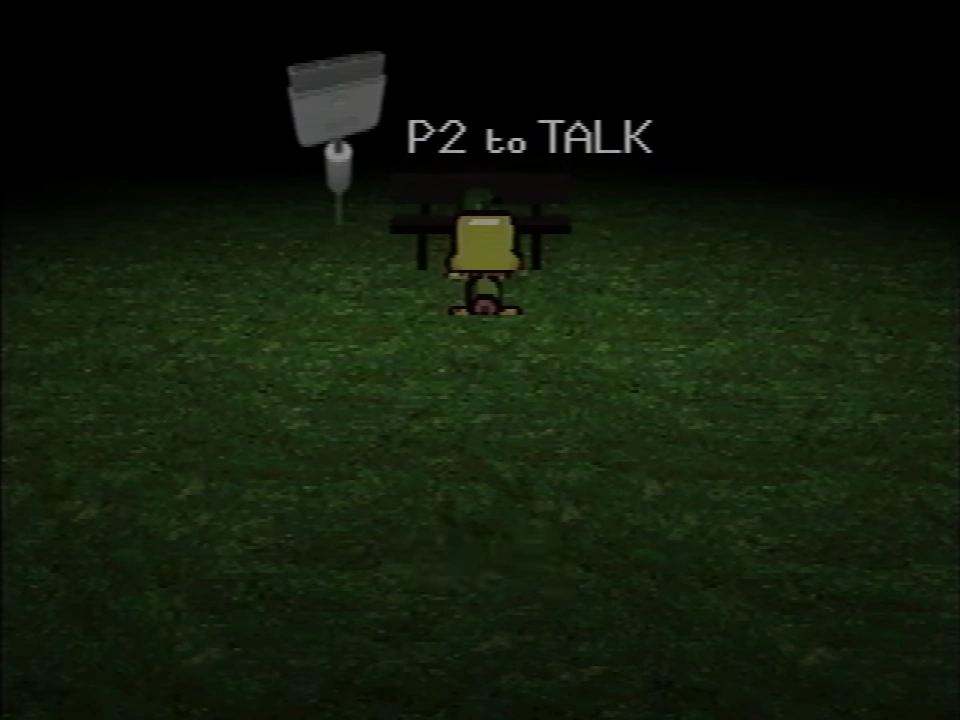

P2 to TALK
{kind=link}

{kind=link}
The game prompting the player about P2 to TALK
P2 to TALK is a form of communication inside Petscop that uses a second controller connected to the PlayStation to communicate using a phonetics-based system.
It is used in Petscop 11, Petscop 15, Petscop 23, and Petscop Soundtrack.
Function
The PlayStation controller buttons have set combinations that refer to a phoneme. These phonetic combinations refer to a dictionary table that output words that have the given phonetics. Errors in input (including words not in the dictionary table) will result in a "Not In Table" message.
{kind=link}
{kind=link}
{kind=link}
Combinations
Only showing known combinations.
| Buttons | R2 |
R1 |
L2 |
L1 |
N/A |
|---|---|---|---|---|---|
Cross |
long "u" / u: tune |
long "a" / eɪ bay |
"mm" / m make |
"ss" / s sip |
"ah" / ɑ bar |
Square |
"puh" / p put |
"nn" / n new |
"zz" / z fuse |
short "a" / æ cap | |
Circle |
"tuh" / t turn |
long "e" / i: bee |
"rr" / r road |
||
Triangle |
"buh" / b book |
short "i" / ɪ kiss |
"luh" / l look |
"sh" / ʃ shut |
"aw" / ɔ: call |
Left |
"th" / θ theme |
short "u" / ʌ buck |
"ng" / ŋ sing |
short "e" / e bet | |
Right |
"dh" / ð other |
"uw" / ʊ could |
"gh" / g give |
"er" / ɚ player | |
Up |
"ff" / f fast |
long "o" / əʊ coal |
"y" / j yes |
"jh" / dʒ just |
long "i" / aɪ time |
Down |
"vv" / v very |
"hh" / h hat |
"kuh" / k cash |
"a" / eə there | |
Start |
"duh" / d door |
"wuh" / w wind |
"ch" / ʈʃ chime |
"uh" / ə bun |
Notes
Only Marvin, "Pall", and Tiara have been seen using the P2 to TALK system. Marvin appears to be the most experienced with the system, inputting words the fastest. "Pall" is the slowest, and their errors indicate inexperience. Tiara inputs the combinations at a midrange speed (though faster in Petscop Soundtrack), likely to having some time in use.
Most names are not in the dictionary table. "Marvin" results in an error. Some names such as "Paul" and "Belle" have homophones such as "pall" and "bell", respectively, that are output instead. Others such as "Tiara" are otherwise actual words. The one known exception case is "Lina", though it outputs as "Boss".
In Petscop 12, when Marvin is seen repeating the same inputs from the demo recording shown in Petscop 11, his messages sent via P2 to TALK are absent, which may indicate that P2 to TALK was not accessible to the player at the time Petscop 12 was recorded.